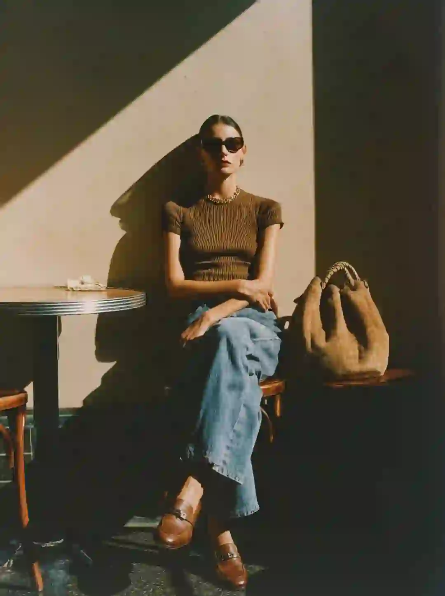
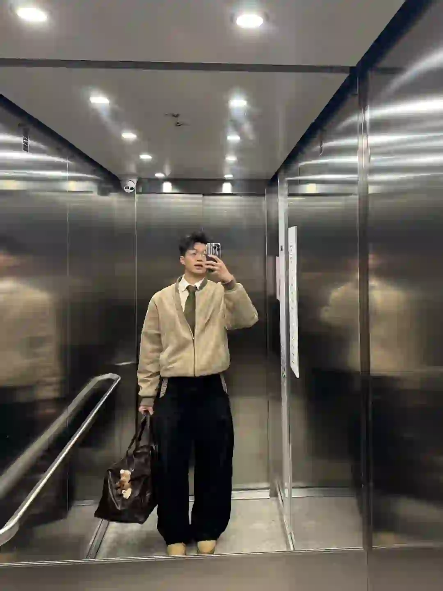
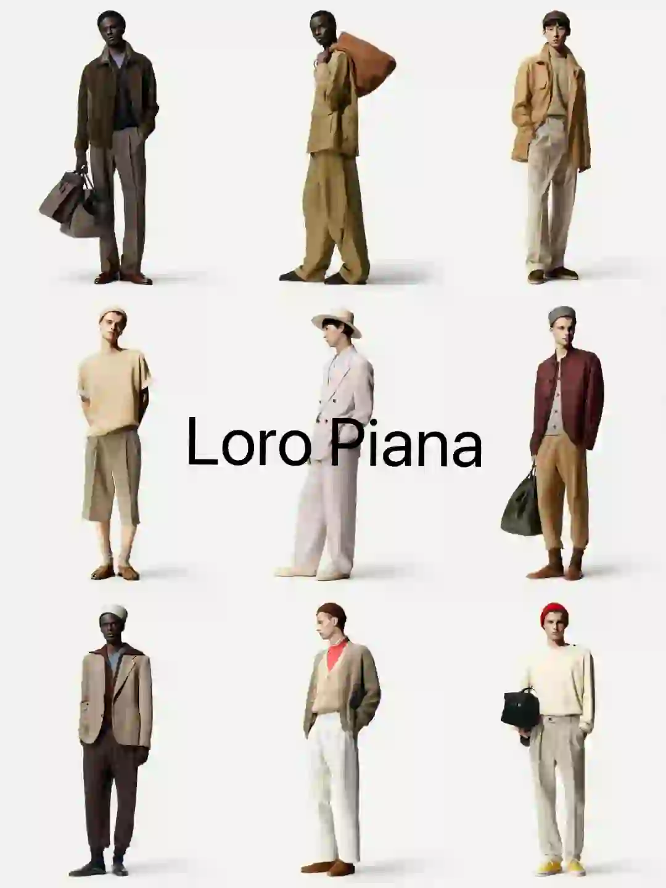
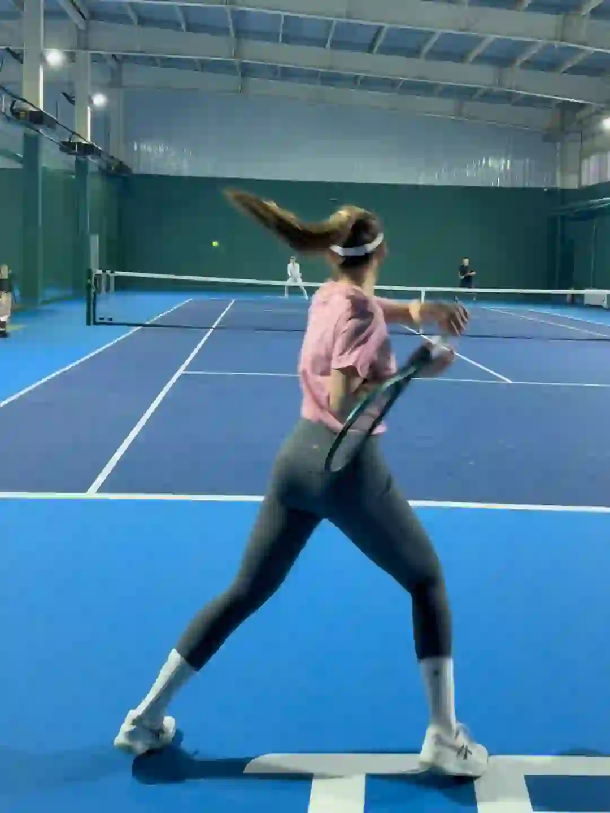
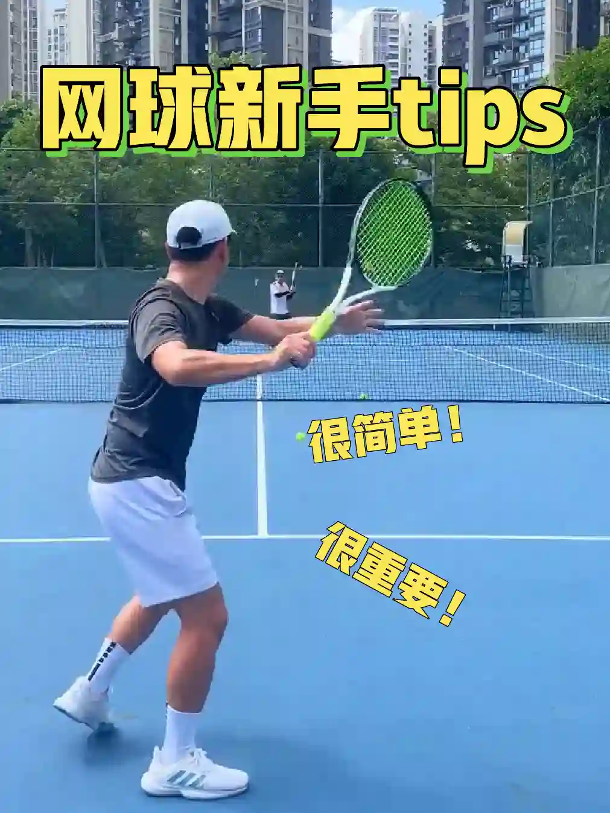

2026年3月31日
03月31日报告
生成时间：2026-03-31 · 范围：时尚 / 穿搭 / 网球
今日参考账号：雪松Oceana / 设计灵感站 / 摄影电焊机
今日高信号标题：松弛的高级感｜Oceana ｜ ✨审美积累丨排版不是文字大才吸睛 ｜ 盘点上海夏季街头简约随性高级感穿搭分享
竞品策略变化：未命中监控竞品样本
今日高信号标题：松弛的高级感｜Oceana ｜ ✨审美积累丨排版不是文字大才吸睛 ｜ 盘点上海夏季街头简约随性高级感穿搭分享
竞品策略变化：未命中监控竞品样本

时尚 · 01
松弛的高级感｜Oceana
⭐ 1223
👍 2001
今天可学
- 内容结构：人物 + 4图，更像单点表达
- 收藏效率高，说明用户把它当成可复用模板/知识卡，不只是刷到即过
- 标签聚焦：#今日份 / #日常穿搭 / #自带氛围感的单品

时尚 · 02
✨审美积累丨排版不是文字大才吸睛
⭐ 886
👍 1022
今天可学
- 内容结构：文字卡 + 18图，更像资料型合集
- 收藏效率高，说明用户把它当成可复用模板/知识卡，不只是刷到即过
- 正文入口：分享一组JOE DIVER的版式设计作品，文字排版，不是字体越大越好，错落有致的视觉韵律更吸睛。 #英文字体 #高级感排版 #设计美学 #审美积累 #平面设…
- 标签聚焦：#英文字体 / #高级感排版 / #设计美学 / #审美积累

时尚 · 03
盘点上海夏季街头简约随性高级感穿搭分享
⭐ 409
👍 4335
今天可学
- 内容结构：人物 + 4图，更像单点表达
- 点赞高于收藏，偏流量型曝光内容，不值得原样照抄
- 评论活跃，适合加入观点冲突、对比案例或常见误区来拉讨论
- 标签聚焦：#上海街拍 / #Ootd / #日常穿搭 / #今天穿什么香
时尚 · 04
诗人风、紧身轮廓…26 秋冬男装有哪些新趋势？
⭐ 153
👍 184
今天可学
- 内容结构：文字卡 + 4图，更像单点表达
- 这条流量带有明显外部加成，只拆内容结构与包装，不原样复制流量来源
- 正文入口：🤵♂️回顾 2025 年最受热议的时尚瞬间 ，很多都来自男装造型，尤其是随着男装设计继续采用极繁主义风格 ，我们可以期待在 2026 年秋冬男装季出现一些俏皮的点缀和更大胆的审美…
- 标签聚焦：#时尚资讯 / #潮流趋势 / #时尚探索者

时尚 · 05
C2H4® 2025 Winter Drop Lookbook
⭐ 180
👍 248
今天可学
- 内容结构：文字卡 + 4图，更像单点表达
- 这条流量带有明显外部加成，只拆内容结构与包装，不原样复制流量来源
- 正文入口：潮流趋势/审美提升/灵感图片 潮流趋势灵感图片by:® 2025 Winter Drop Lookbook
- 标签聚焦：#廓系穿搭 / #每天一个穿搭灵感 / #潮流趋势 / #时尚穿搭
时尚赛道今日方法论
- 样本依据：松弛的高级感｜Oceana / ✨审美积累丨排版不是文字大才吸睛
- 当天结构信号：文字卡封面 + 4图 最强；优先学习样本 2 条，低收藏流量样本 1 条。
- 时尚赛道今天跑出来的是“审美判断 + 资料感整理”：像 ✨审美积累丨排版不是文字大才吸睛 这类高收藏样本，核心不是讲步骤，而是把趋势、风格线索和案例并排给足，用户才愿意以 86.7% 的收藏率反复回看。
- 执行建议：标题先抛出趋势/风格判断，再给明确收益；正文少讲空泛氛围，多给风格标签、对照案例和可复看的视觉结论，让内容更像灵感资料卡。
- 反例提醒：盘点上海夏季街头简约随性高级感穿搭分享 点赞高但收藏低，说明这类曝光型内容能带流量，不适合直接当明日主打法。
- 风险提醒：诗人风、紧身轮廓…26 秋冬男装有哪些新趋势？ 已标记为 [不可复制]，只拆结构，不作为明日选题原样跟进。
今日参考账号：Shanghai sights / 圆脸又大头 / 莫里斯
今日高信号标题：上海秋冬男士街拍年度18图（秋冬篇） ｜ 早春18套西装通勤穿搭合集🤵♀️ ｜ 电梯间的一周穿搭👔
竞品策略变化：未命中监控竞品样本
今日高信号标题：上海秋冬男士街拍年度18图（秋冬篇） ｜ 早春18套西装通勤穿搭合集🤵♀️ ｜ 电梯间的一周穿搭👔
竞品策略变化：未命中监控竞品样本

穿搭 · 01
上海秋冬男士街拍年度18图（秋冬篇）
⭐ 618
👍 2813
今天可学
- 内容结构：人物 + 18图，更像资料型合集
- 收藏效率高，说明用户把它当成可复用模板/知识卡，不只是刷到即过
- 评论活跃，适合加入观点冲突、对比案例或常见误区来拉讨论
- 标签聚焦：#城市氛围感穿搭 / #ootd每日穿搭 / #上海街拍 / #街拍穿搭
穿搭 · 02
早春18套西装通勤穿搭合集🤵♀️
⭐ 818
👍 1642
今天可学
- 内容结构：文字卡 + 0图，更像单点表达
- 收藏效率高，说明用户把它当成可复用模板/知识卡，不只是刷到即过
- 评论活跃，适合加入观点冲突、对比案例或常见误区来拉讨论
- 正文入口：（正文为空或未取到）

穿搭 · 03
电梯间的一周穿搭👔
⭐ 425
👍 1304
今天可学
- 内容结构：人物 + 4图，更像单点表达
- 收藏效率高，说明用户把它当成可复用模板/知识卡，不只是刷到即过
- 正文入口：每天必须把自己穿帅 然后在电梯间里面拍一张fitcheck
- 标签聚焦：#好会穿一男的 / #ootd / #fitcheck / #打工人一周穿搭

穿搭 · 04
化繁为简的Loro Piana老钱穿搭图鉴
⭐ 161
👍 251
今天可学
- 内容结构：人物 + 4图，更像单点表达
- 这条流量带有明显外部加成，只拆内容结构与包装，不原样复制流量来源
- 正文入口：25/26秋冬的Loro Piana简直是天花板级别的老钱穿搭了，整个色彩以大地色系为主； 高级的燕麦色主色调与针织，羊毛搭配，在极简主义里的奢华感真是一点没能藏住； 整个系列的版…
- 标签聚焦：#品牌分享 / #时尚资讯 / #loropiana / #绅士穿搭
穿搭 · 05
我喜欢的日系感觉
⭐ 352
👍 1497
今天可学
- 内容结构：未判定 + 0图，更像单点表达
- 收藏效率高，说明用户把它当成可复用模板/知识卡，不只是刷到即过
- 评论活跃，适合加入观点冲突、对比案例或常见误区来拉讨论
- 正文入口：（正文为空或未取到）
穿搭赛道今日方法论
- 样本依据：上海秋冬男士街拍年度18图（秋冬篇） / 早春18套西装通勤穿搭合集🤵♀️
- 当天结构信号：人物封面 + 0图 最强；优先学习样本 4 条，低收藏流量样本 0 条。
- 穿搭赛道今天最有效的是“整套可抄作业方案”：高收藏样本 早春18套西装通勤穿搭合集🤵♀️ 说明，只要场景清楚、look 数量够多、搭配结果一眼能看懂，就更容易拿到 49.8% 级别的收藏反馈。
- 执行建议：优先做通勤/职业/一周不重样/套装盘点这类清单式内容；封面先给完整上身结果，图组里再拆单品变化和搭配理由，不要只发单套氛围图。
- 风险提醒：化繁为简的Loro Piana老钱穿搭图鉴 已标记为 [不可复制]，只拆结构，不作为明日选题原样跟进。
今日参考账号：小吴WMX / Takuya Komura 小村拓也 / 杨羽丰Rain
今日高信号标题：这组正手分点能自称5.0吗🍒 ｜ attack tennis 🎾 ｜ 秋季多巴胺/简单好看的6套网球入秋穿搭
竞品策略变化：未命中监控竞品样本
今日高信号标题：这组正手分点能自称5.0吗🍒 ｜ attack tennis 🎾 ｜ 秋季多巴胺/简单好看的6套网球入秋穿搭
竞品策略变化：未命中监控竞品样本

网球 · 01
这组正手分点能自称5.0吗🍒
⭐ 742
👍 4608
今天可学
- 内容结构：视频封面 + 视频，更像视频示范/单点表达
- 收藏与点赞较平衡，可学选题包装，但仍需补强可执行细节
- 评论活跃，适合加入观点冲突、对比案例或常见误区来拉讨论
- 正文入口：来自左撇子的正手分点[棒R] 不知道往哪打 就发力塞中间[偷笑R]
- 标签聚焦：#网球 / #网球尖子生 / #运动少女 / #网球女孩

网球 · 02
attack tennis 🎾
⭐ 946
👍 4344
今天可学
- 内容结构：视频封面 + 视频，更像视频示范/单点表达
- 收藏效率高，说明用户把它当成可复用模板/知识卡，不只是刷到即过
- 标签聚焦：#tennis / #rf / #テニス / #网球

网球 · 03
秋季多巴胺/简单好看的6套网球入秋穿搭
⭐ 949
👍 1448
今天可学
- 内容结构：视频封面 + 视频，更像视频示范/单点表达
- 收藏效率高，说明用户把它当成可复用模板/知识卡，不只是刷到即过
- 评论活跃，适合加入观点冲突、对比案例或常见误区来拉讨论
- 正文入口：-秋冬保持轻巧不臃肿 一件外套搭配 可穿可脱更有层次感！ 👕Kswiss 卢布列夫 🩳Kswiss 卢布列夫 👟Nike Court Zoom NEX 🎾Head Extreme …
- 标签聚焦：#网球穿搭ootd / #网球穿搭 / #ootd每日穿搭 / #男士穿搭
网球 · 04
网球真开心
⭐ 238
👍 4262
今天可学
- 内容结构：未判定 + 0图，更像单点表达
- 点赞高于收藏，偏流量型曝光内容，不值得原样照抄
- 评论活跃，适合加入观点冲突、对比案例或常见误区来拉讨论
- 正文入口：（正文为空或未取到）

网球 · 05
新手打网球，就像这样慢慢拉、稳稳拉~
⭐ 711
👍 1513
今天可学
- 内容结构：视频封面 + 视频，更像视频示范/单点表达
- 收藏效率高，说明用户把它当成可复用模板/知识卡，不只是刷到即过
- 评论活跃，适合加入观点冲突、对比案例或常见误区来拉讨论
- 正文入口：不要追求发力，手臂要放松； 注意脚步、早到位、早引拍； 收紧核心、降重心；
- 标签聚焦：#网球 / #球类运动日常 / #网球教学 / #让更多的人爱上网球
网球赛道今日方法论
- 样本依据：attack tennis 🎾 / 秋季多巴胺/简单好看的6套网球入秋穿搭
- 当天结构信号：视频封面封面 + 视频 最强；优先学习样本 3 条，低收藏流量样本 1 条。
- 网球赛道今天胜出的不是热闹球场感，而是“动作纠错/装备收益/新手可执行”：高收藏样本 秋季多巴胺/简单好看的6套网球入秋穿搭 证明，只要用户能马上拿去练，收藏率就能来到 65.5%。
- 执行建议：标题写清动作部位、错误修正或装备收益；内容里给慢动作、步骤和上场场景。明星/赛事样本只借包装，不把热点本身当方法论。
- 反例提醒：网球真开心 点赞高但收藏低，说明这类曝光型内容能带流量，不适合直接当明日主打法。
- 自动抽取规则：仅收录收藏率 >20% 且未被标记为 [不可复制] 的标题模板
- 写入目标：/Users/zhangxiaosong/shared/context/xhs-knowledge/topics/title-templates.md
- 把今天高收藏、高可复制的打法优先塞进明日发帖计划
- 竞品若连续两天从展示型转向教程/资料型，单独开策略变更记录
- 对被标注 [不可复制] 的样本，只拆结构，不抄流量来源